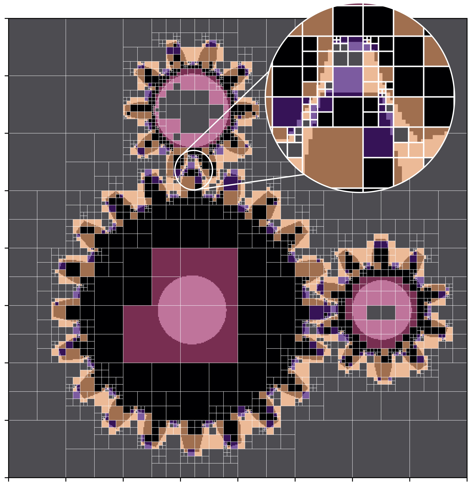

|
Egor Chulkov I am currently a PhD student at Skoltech under the supervision of Oleg Vasilyev. My research focuses on developing efficient, real-time, and operation-rich implicit modeling techniques for engineering and design applications. I am particularly interested in numerical methods and algorithms related to F-rep / SDF, with applications in rendering, discretization, and meshing. |

|
Research |
|

|
Adaptive Constructive Solid Geometry with Constant Evaluation Complexity for Modeling Implicitly Defined Complex Objects
Egor Chulkov Masters Thesis, Skoltech, 2025 Thesis / Slides (PDF) / Slides (Keynote) An adaptive stopping criterion for spatial octrees halts subdivision by local geometric complexity, decoupling cost from model detail and enabling constant-time evaluation. |
|
Website design from Jon Barron. |